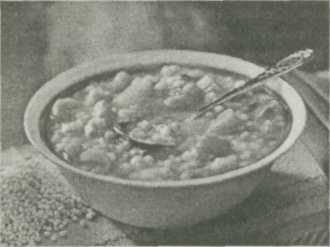

Первые блюда
 Знатная ушица!
Знатная ушица!
Из рыбы можно приготовить вкусные и разнообразные первые блюда. Есть два вида рыбных супов: уха, т.е. чистый рыбный отвар, или бульон, и заправочный рыбный суп, т.е. рыбный отвар, приправленный мукой с маслом и разными гарнирами.
Уху готовят из нескольких сортов рыбы: из ершей, окуней, налима и сига. Чтобы получилась вкусная и крепкая уха, необходимо брать одновременно несколько сортов рыбы, обладающей клейкостью, нежностью и сладостью. Скажем, ерши и окуни придают ухе приятный вкус и клейкость, а сиг и налим — нежность и сладость.
Самая вкусная уха получается из свежей, только что выловленной рыбы. Если же рыба пролежит хотя бы несколько часов, то вкус ухи уже не тот. Если уху готовят из живой рыбы, то в нее для вкуса ничего не надо класть, разве что одну луковицу. Если же варят уже уснувшую рыбу, то следует класть белые коренья, соль, перец, лавровый лист, лук, пучок зелени, укроп, ломтики лимона без зерен и корицу.
Чем больше рыбы в ухе, тем она вкуснее. Для отменной ухи на 6-8 тарелок надо брать не менее 2,4 кг рыбы, для обычной — 1,2 кг.
Если в уху, кроме белых кореньев, лука и специй, кладут ершей, то их надо заранее варить часа два, пока они совершенно не разварятся, а затем процедить.
Если рыба для ухи цельная и крупная, то ее опускают в остывший отвар, а если мелкая или разрезанная на порции, то — в кипящий, а затем доваривают на медленном огне.
Варится рыба от 20 до 30 минут. Если вилка легко проходит в рыбу, значит, она уже готова.
Манная крупа, вермишель, макароны должны вариться сразу в общем, но процеженном уже бульоне, который должен уже едва-едва кипеть на самом малом огне.
Чтобы уха была наваристой, ее часто варили из свежей рыбы и птицы.
При этом следили, чтобы рыба, из которой готовят навар, не была очищена, «ибо оскабливая рыбу, снимается драгоценная для бульона слизь», а «прибавление курицы во время варки ухи придает рыбному навару и много крепости, и много вкусу». (П.М.Зеленко. «Поварское искусство». М., 1902).
И сегодня основным достоинством рыбной ухи считается крепкий бульон. Поэтому знатоки часто варят двойную, а то и тройную уху из разной рыбы.
Тройная ухаСекрет приготовления ухи сводится к следующему: очень важны пропорции приправ, количество рыбин и качество воды. Самой вкусной уха получается, если ее готовить на родниковой воде. Улов делится на три части: в одной мелкая рыба для навара, в двух остальных (по объему котелка) рыба крупная. Здесь могут быть: судак, голавль, язь и все остальное, что попалось на удочку (но не купленное, иначе уха не получится!). Исключение составляет лишь сом — он пригоден только на жареху.
В первой части — ерши, бирючки, окуньки. Их варят неочищенными, но выпотрошенными, с тщательно промытым брюшком — иначе уха будет мутная и горькая. Слизь на ершах и бирючках дает ухе божественный вкус и аромат — «амброзию», что переводится как пища богов. За это качество ерш, например, имеет почетное звание и при сборе ухи считается ее «комендантом»…
Бульон из мелкой рыбы варят 30-45 мин. Когда навар будет готов — дать бульону отстояться, слить его чистым и прозрачным, снова поставить на огонь.
А. Попов «Демьянова уха»
С последующей закладкой крупной рыбы (разумеется, вычищенной, выпотрошенной и тщательно промытой) положить разрезанную на четыре части крупную луковицу, морковь, маленький кусочек корня петрушки или сельдерея, добавить соль. Долить кипяток и варить уху на слабом огне 30 мин., не более, иначе рыба разварится. При этом существует фирменное правило: когда варят крупную рыбу, то ложкой в котелке не ворочают, не следует ее и помешивать. А чтобы рыба не пригорала, котелок время от времени поворачивают, чуть-чуть встряхивают и тогда все куски крупных рыб не разламываются, остаются в целости.
После готовности рыбу вынуть, пока горячая, присолить, а в котелок заложить третью порцию и вместе с ней немного перца. Нелишне положить плавательные пузыри крупных рыб и ленточки жира, снятые с выбрасываемых внутренностей: тогда уха будет особо наваристой — с блестками жира размером в пятак.
Запомните: лавровый лист, петрушка, укроп имеют резкие специфические запахи, они заглушают вкус рыбы, и присутствие их в котелке противопоказано. Нужно сказать, что и остальные пряности кладут очень осторожно: всего понемногу и непременно в конце варки. Только так можно узнать и испробовать все вкусовые качества рыбацкой ухи. Общее фирменное правило должно соблюдаться неукоснительно: чем больше рыбы, чем меньше пряностей — тем слаще, ароматнее уха. Она имеет вкус и запах натуральной речной рыбы, а не лаврового листа. Только архиерейская уха позволяет себе отступление: ее варят на курином бульоне, со сладким зеленым лучком и перчиком.
А в рыбацкой ухе — кроме рыбы лишь репчатый лук да морковь. Они и придают ухе особый вкус, украшают ее в прямом и переносном смысле: уха имеет янтарный прозрачный цвет и умопомрачительный запах, а из нее (представьте себе!) торчат рубиновые плавники окуней и красные кружочки моркови. Незабываемое блюдо! Но если в котелок положить несколько лепестков щавеля, кусочек лимона или соленого огурца, добавить один зубчик чеснока, то от ухи не оттянешь и за уши. Без этих приправ уха будет не уха, а так — чепуха…
Донская ухаВычищенную мелочь (рыбьи головы, хвосты, плавники, пузыри, а также пескарей, ельцов, плотвиц и подлещиков) залить водой и прокипятить 30-40 мин. Полученному бульону нужно дать отстояться, затем слить в другой, более емкий котелок или ведро, а разварившуюся рыбу и все отходы выбросить. В бульон опустить пару сырых яичных белков, вся муть осядет на дно, а бульон станет чистым и прозрачным как слеза. На 1 л бульона положить 50-100 г очищенного и нарезанного ломтиками картофеля, 1 ч.л. промытой пшенной крупы, посолить, поставить на сильный огонь. Когда снова закипит и картофель станет мягким, в посуду положить очищенную от чешуи, выпотрошенную и тщательно промытую рыбу. Рыбу средних размеров закладывать целиком, крупную — нарезать на куски.
Главным компонентом донской ухи являются бирючки. Их нужно закладывать в котелок последними: вычищенными, выпотрошенными и тщательно вымытыми. Из ухи их уже не вынимают: когда она будет готова — бирючки всплывают на поверхность и плавают между блестками жира. Длиннорылые, покрытые укропными пятнышками, с белым и
умопомрачительного вкуса мясом, они являются достоянием и украшением донской ухи. Вместе с бирючками уху нужно заправить нарезанным кольцами репчатым луком и молотым перцем, но не до такой степени, чтобы уха «горела» во рту.
Готовность ухи определяют по готовности рыбы: сваренная рыба становится рыхлой, мясо ее приобретает молочно-белый цвет. Обычно уху варят 30-40 мин. после варки бульона. 15-20 мин. уходит на варку картофеля и пшена, 15-20 мин. — на варку рыбы, специй и доваривание пшена. При варке ухи не забывайте поговорку: «Говядину — не довари, а рыбу — перевари».
Уха с помидорами1 кг рыбной мелочи, 500 г судака, карпа, щуки, окуня, трески, 1,5-2 л воды, 2 луковицы, 1 морковь, 1 -2 корня петрушки, 4-5 средних помидоров, 1 -2 ст.л. сливочного масла, 2 лавровых листа, 5-6 горошин душистого перца, пучок зелени укропа.
Из рыбной мелочи сварить бульон, в нем сварить нарезанную кусками крупную рыбу до готовности, затем ее вынуть, а бульон процедить. Овощи и коренья нарезать соломкой и спассеровать на масле. Помидоры очистить от кожицы, мелко нарубить, прогреть на масле до получения однородной массы и заправить ею рыбный бульон. В полученный бульон добавить пассерованные овощи и коренья и варить их до готовности. В конце варки в уху опустить лавровый лист и перец. При подаче в суповую тарелку положить кусок рыбы, налить уху и посыпать мелко нарезанной зеленью укропа.
Уха для… лимона!Для любителей, выращивающих в комнатных условиях цитрусовые растения, очень важным будет совет от специалиста в этой области — минчанина Олега Кондрацкого.
Для того, чтобы на растении завязались цветочные почки, необходим фосфор. В домашних условиях лучшей подкормкой является уха, но только без соли. Можно использовать любую рыбу, можно даже не ее, а внутренности, голову, плавники, хребет. Все это залить водой (1:1) и в течение часа кипятить на медленном огне. Затем этот «бульон» процедить. Его можно хранить в холодильнике продолжительное время. По мере необходимости часть его нужно разбавлять теплой водой (1:5) и поливать (обычно зимой и летом) 1 -2 раза в месяц. Больше не надо. Вообще, это удобрение, которое нельзя передозировать, вреда оно не принесет.
Газета «Цветок».
Уха из налима400 г налима (или стерляди, судака), 1 ч.л. сливочного масла, 1 морковь, 1/4 лимона, зелень петрушки и укропа — по вкусу, 2 л рыбного бульона.
Сварить бульон из мелкой рыбы. Подготовленные порционные куски крупной рыбы сварить в небольшом количестве процеженного рыбного бульона, периодически снимая пену. Бульон, полученный при варке рыбы, добавить в уху. Морковь, нарезанную соломкой, спассеровать на сливочном масле и добавить в готовую уху. Отдельно подать лимон и мелко нарезанную зелень.
Уха деликатеснаяНа 1кг осетровой рыбы — 0,8-1 кг рыбной мелочи, по 1 корню сельдерея и петрушки, лука-порея, 2 луковицы, 2 лавровых листа, 6-8 горошин черного перца, пол-лимона, соль — по вкусу.
Сварить пряный отвар, добавив в него мелкую, хорошо промытую и обезглавленную рыбу. Процедить через чистую ткань. Охладить. Подготовить и нарезать осетровую рыбу. Опустить в охлажденный отвар, довести до кипения, тщательно удалив пену, уменьшить нагрев. Варить приблизительно 20-25 мин. Готовую рыбу осторожно вынуть из отвара, положить по 1 куску в каждую тарелку, добавив несколько ломтиков лимона без зерен, залить бульоном и посыпать измельченной зеленью. Эта уха хороша для праздничного стола. Ей можно придать отличный вкус, добавив в самом конце варки 1 ст. несладкого шампанского.
Днепровская1,5 кг мелкой рыбы (ерш, окунь), 1,7 кг свежего судака или морского окуня, 250 г репчатого лука, 100 г корня петрушки или сельдерея, 600 г картофеля, 50 г шпика, зелень петрушки, лавровый лист, перец, соль — по вкусу.
Для каши 150 г пшена или риса, 400 мл рыбного бульона, 50 г растительного масла, 50 г сливочного масла, 2 яйца, соль — по вкусу.
Мелкую потрошеную рыбу без жабр и глаз промыть, залить холодной водой и варить с добавлением обжаренного без жира репчатого лука, корня петрушки и сельдерея до разваривания рыбы. Готовый бульон процедить и часть его оставить для приготовления каши. В кипящий рыбный бульон положить нарезанный дольками картофель, проварить 10-15 мин., добавить подготовленные порционные куски филе судака без кожи и костей и варить до готовности рыбы. Уху заправить растертым с репчатым луком шпиком, добавить лавровый лист, черный перец горошком, соль и довести до кипения. При подаче посыпать мелко рубленной зеленью петрушки, отдельно подать кашу.
Для приготовления каши перебрать и промыть пшено или рис, прогреть в горячем растительном масле, соединить с бульоном и варить до вязкой консистенции. В полуготовую кашу ввести сливочное масло, взбитые яйца, соль, вымешать и варить на пару до готовности.
Рядовая из речной рыбы1,5 кг рыбы, 7 ст. воды, 2 луковицы, 0,5 шт. моркови, 1 корень петрушки с зеленью, 2 клубня картофеля, 1 корень пастернака, по 1 ст.л. измельченной зелени эстрагона и укропа, 3 лавровых листа, 8 горошин черного перца, 2 ч.л. соли.
В подсоленный кипяток положить разрезанный на четвертинки очищенный картофель, головы и хвосты рыбы, мелко нарезанный лук, нарезанные соломкой морковь, корень петрушки, пастернака и варить на слабом огне 20 мин. Бульон процедить, положить лавровый лист, перец прокипятить 5 мин., увеличить огонь и опустить крупные куски (по 4-5 см) рыбы. Варить на умеренном огне 20 мин. В конце уху посолить по вкусу, заправить зеленью петрушки, укропа, эстрагона, снять с огня, дать настояться под крышкой 8-10 мин. и подать.
Уха по-архиерейскиЭто праздничное блюдо в старину украшало столы высшего духовенства. Оно основано на сочетании вкуса бульона из разных пород благородной рыбы.
На 5 л воды — половина небольшой индейки, 2,5 кг рыбной мелочи, 2 кг осетрины, 1,5 кг стерляди, соль и пряности — по вкусу.
Сварить крепкий бульон из индейки и процедить. Речную рыбу разных пород (пескаря, карася, карпа) завернуть в чистую марлю, опустить в бульон, выварить до кашеобразного состояния и вынуть. Крупную рыбу (осетрину) нарезать толстыми ломтями, варить до полуготовности, вынуть, зажарить или потушить на второе. Процедив бульон, опустить в него стерлядь. На 15-20 мин. опустить в бульон лук, черный перец (горошек) и один лавровый лист, завернутые в марлю. Когда стерлядь сварится, вынуть ее и марлю с пряностями, добавить в бульон одну-две рюмки крепкой водки. Разлить уху по тарелкам и подать.
Уха хлебная200 г пшеничного хлеба, 600 г рыбы (мелочь или рыбные отходы), 600 г судака, по 10 г корня сельдерея и петрушки, 100 г репчатого лука, 1 сырой яичный желток, 1 ч.л. 9%-ного уксуса, перец, лавровый лист, зелень, соль — по вкусу.
Хлеб нарезать ломтиками по 50 г, слегка поджарить на сухой сковороде. Мелкую рыбу очистить, промыть, сложить в кастрюлю, посыпать сверху рублеными луком, зеленью, специями, залить холодной водой так, чтобы она покрыла продукты, и варить на слабом огне 15-20 мин., снимая пену. Когда уха будет готова, ее процедить, добавить очищенного и разделанного на куски судака, посолить и варить еще 20 мин. Желток тщательно размешать с уксусом, добавить несколько ложек горячей ухи и этой смесью заправить всю уху. При подаче в глубокую тарелку положить ломтик поджаренного хлеба и залить ухой с кусками рыбы.
Василий САБАНЕЕВ, г.Муром.
Походная ухаНовички, первый раз приехавшие на рыбалку, думают, что сварить уху сможет каждый. Однако это далеко не так. Настоящие рыбаки долго и загадочно колдуют у костра, прежде, чем удивить непосвященных оригинальным вкусом блюд из свежепойманной рыбы. У нас на Амуре водятся карась, сазан, конек, щука, сиг, верхогляд… Ну а если попадется таймень или ауха, то от вкуснотищи вообще язык проглотишь!
На ниточкахУ очищенной и выпотрошенной рыбы удалить плавники, тушки нанизать на нить, пропустив ее через глаза. Связку с рыбой, поддев на палочку, опустить в котелок, положив палочку на край. Добавить по вкусу нарезанные лук, морковь и зелень, перец, лавровый лист, посолить и поставить на огонь. Уха готова, когда мясо станет отделяться от костей. Мясо снять вилкой, а нить с костями выбросить.
С пузырямиВ котелок с кипящей подсоленной водой опустить несколько очищенных целых луковиц, нарезанный кубиками картофель и 0,5 ст. промытого пшена. Рыбу очистить, выпотрошить, вымыть. Вынутые воздушные пузыри промыть и опустить вместе с рыбой в котелок, накрыть крышкой. Через несколько минут из котелка вы услышите щелчки — это лопаются пузыри. Когда рыба будет готова, опустить в бульон лавровый лист и перец. Влить на 3 л ухи 2 ст.л. водки, накрыть крышкой и оставить возле костра на 10-15 мин.
Любовь МЕДВЕДЕВА, г.Хабаровск.
• Рыбный бульон нужно солить в начале варки.
• Варить бульон из голов леща, карпа, воблы, карася, наваги, плотвы не рекомендуют — он получается горьким.
Бульон из хребтов красной рыбыВ кипящую воду опустить спассерованные на подсолнечном масле измельченные лук и морковь, можно добавить, если есть, корень петрушки и сельдерея, перец горошком, лавровый лист. Через 10-15 мин. опустить туда хребты, посолить и варить еще 10-15 мин. В конце варки добавить зелень петрушки, укропа, для придания красивого желтого оттенка в бульон можно опустить хорошо вымытую луковую шелуху.
Хребты вынуть, отделить вилкой мякоть от костей, смешать ее с жареным измельченным луком и мелко рубленными отварными яйцами, заправить майонезом. Полученной массой намазать ломтики булки и поставить в духовку на 7-10 мин. Бульон процедить. Подать с бутербродами.
Людмила ГУБКИНА, г.Алексин Тульской обл.
• Много возни с мелкой рыбешкой, предназначенной для ухи. Да если еще улов такой мелочи был богат! Но массу времени и труда можно сэкономить, если рационально организовать процесс. К примеру, ножом или ножницами, да не простыми, а специальными рыбацкими, с пружинкой, раздвигающей лезвия после ослабления нажима (продаются в хозяйственных магазинах), одним движением вспарывают рыбешке живот ото рта до анального отверстия, откидывают ее и берут следующую. Только после того, как будут вспороты все рыбки, их так же дружно, «конвейерно», освобождают от потрохов. Словом, лишь выполнив одну операцию на всех рыбешках, приступают к другой. Попробуйте и убедитесь, что дело пойдет заметно быстрее, а значит, будет и менее утомительным. С сома, налима кожу стягивают, как чулок, надрезав ее сначала вокруг головы. С лосося чешую не снимают.
Разделанную рыбу очищают от кровяной прослойки вдоль позвоночника и ополаскивают. Особенно тщательно выскабливают усача, храмули, икра и внутренности которых ядовиты.
Русская народная кальяОдно из любимых старинных русских блюд — калья. Это жидкое горячее первое блюдо, распространенное на Руси в XVI — XVIII веках. Готовили его с рыбой, икрой, курицей, почками, грибами, но обязательно с добавлением соленых огурцов, огуречного рассола, лимонов или лимонного сока. Наиболее популярна была рыбная калья. Для нее брали обычно жирную рыбу — осетрину, белугу, севрюгу, калугу, карпа, палтуса, зубатку и др. В калью, как правило, клали много пряностей, а бульон был концентрированным, острым и ароматным.

600-700 г рыбы, 2 соленых огурца, 0,5-1 л огуречного рассола, 2 луковицы, 1 ст. л. растительного масла, 2-3 картофелины, 2 ст. л. риса, 1 корень петрушки, 1 лук-порей, 2 ст. л. лимонного сока, черный перец горошком, соль.
Очищенную рыбу нарезать порционными кусками, залить 2 л холодной воды и поставить на огонь. Через 10 мин. после закипания влить огуречный рассол и варить почти до готовности рыбы. Добавить нарезанный дольками картофель, пассерованный репчатый лук, промытый рис, петрушку, перец, лук-порей, мелко нарубленные очищенные огурцы, посолить и варить до готовности. По окончании варки калью снять с огня и влить в нее лимонный сок.
С икройДля бульона: 500-600 г пищевых рыбных отходов, 1 луковица, 1 небольшой корень петрушки, 1 морковь, вода.
Для кальи — 200г рыбного филе, 400 г икры, 1 маринованный огурец, 1 луковица, растительное масло, 2 картофелины, соль, перец, лавровый лист, зелень.
При разделке рыбы (щуки, судака, минтая и др.) оставить икру и хранить ее в морозильнике, пока не соберется нужное количество. Из отходов рыбы (голов, костей, плавников) сварить бульон с добавлением лука, моркови и петрушки. Бульон слить, положить в него подготовленную икру, не снимая пленки, посолить и довести до кипения. Бульон процедить, а икру охладить и нарезать на куски. Репчатый лук нашинковать, положить в кастрюлю, влить масло и спассеровать.
Затем добавить нарезанный дольками картофель, влить бульон, довести до кипения и варить почти до готовности. После этого положить маринованные огурцы, нарезанные тонкими ломтиками,лавровый лист, перец горошком и довести до кипения. В тарелки положить куски вареной рыбы и икры, залить кальей и посыпать зеленью.
Рыбная солянка500 г рыбы, 0,5 л огуречного рассола, 2 соленых огурца, 1 большая луковица, 2 ст.л. растительного масла, 1-2 ст. л. томатной пасты, 2 помидора, 0,5 лимона, 1 лавровый лист, соль, перец, зелень, сметана — по вкусу.
Из голов, костей и плавников сварить 1 л рыбного бульона. Репчатый лук мелко нарезать и прогреть на сковороде с растительным маслом. Добавить томат-пасту и, помешивая, держать на небольшом огне еще 5 мин. Положить в кастрюлю нарезанное кубиками рыбное филе, кружочки соленых огурцов, лук, дольки помидоров, специи, влить горячий процеженный бульон и огуречный рассол. Варить на слабом огне до готовности рыбы (10 мин.). При подаче положить в тарелки кусочки очищенного лимона, нарубленную зелень петрушки, укропа, сметану.
Алексей С МАГИН, г.Могилев.
• Если рыбу сварить в воде, разбавленной молоком, она будет иметь более нежный вкус.
• Солить рыбу надо перед самым приготовлением, тогда она будет вкуснее и нежнее.